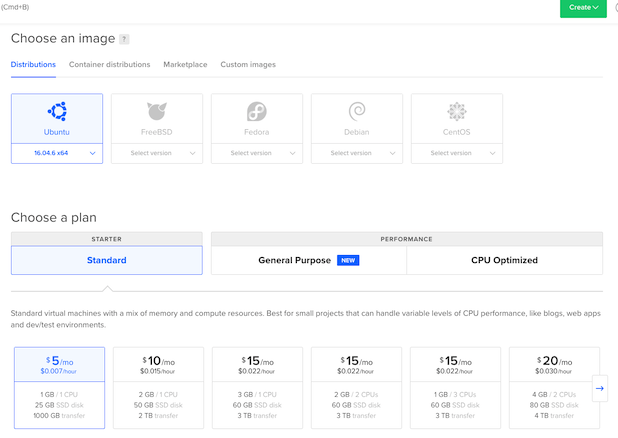
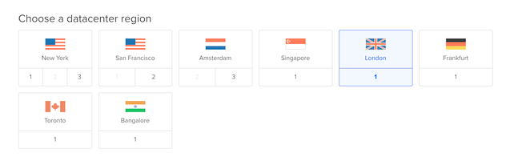
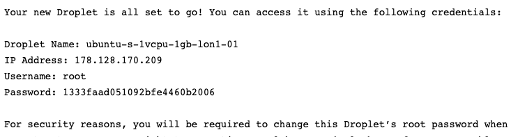
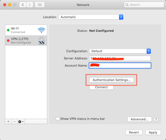
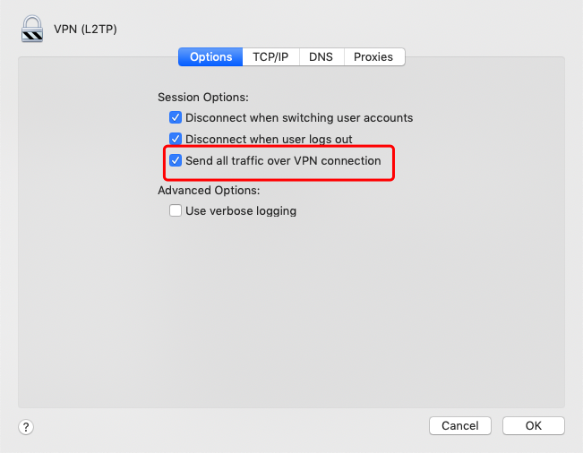
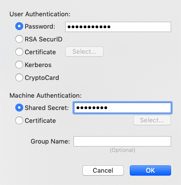
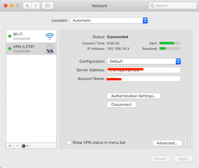

科学上网
使用他人搭建的vpn最大的问题是不稳定。所以勤劳的程序员需要自己翻墙，因为自己的主机比较隐蔽，流量小，不容易引起老大哥的注意。翻墙的原理很简单，就是通过不被墙的主机做中转去访问被墙掉的站点。所以首先需要在域外建立一个主机，vps是最佳的选择。
vps
选择一个vps提供商，这里选择digital ocean 来搭建服务器。vps的成本相当低，digitalocean提供的最低配置只要5$每月，而且建立、删除都很灵活，可以在世界各地建立自己想要的网络服务。这里仅使用主机提供vpn服务。
建立Droplet，选择一个系统镜像，最便宜的5$的方案：

选择主机所在的国家，这里选择英国：

创建完成。
此时你预留的邮箱会收到一封邮件，里面有默认的密码：

使用ssh远程登录：
ssh root@178.128.170.209
输入帐号密码之后，会要求你重置密码。完成。
shadowsocks
如果不需要使用热点共享网络，那么可以使用shadowsocks，它更安全，更不容易被墙。但是需要安装客户端，系统不能默认支持。
教程：https://www.textarea.com/ExpectoPatronum/shiyong-shadowsocks-kexue-shangwang-265/
L2TP/IPSecs
传统的vpn协议有多种选择，区别在这里：
https://thebestvpn.com/pptp-l2tp-openvpn-sstp-ikev2-protocols/
这里选择L2TP/IPSecs。
教程：https://teddysun.com/448.html
主页：https://github.com/teddysun/across
自动搭建完成，最后会得到类似：
Server IP: 178.128.170.209 PSK : psk Username : vpn Password : 123456
客户端
mac
Setting -> Network -> + -> VPN -> L2TP over IPSec -> Create。
填入Server Address，Account Name（对应上面的Server IP和Username），选择Advanced。

勾选“Send all traffic over VPN connection”。

选择Authentication Settings，填写Password，Shared Secret（对应上面的Password和PSK）,OK，Connect。

如果成功的话，会显示“Connected”。
